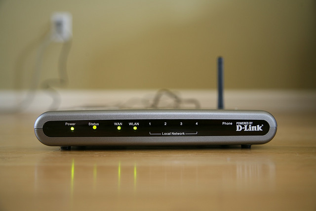

WLAN Concepts <<
Previous Next >> Wireless Standards
Wireless Devices
learning objective-學習目標
Configure a wireless connection.（配置無線連接）
As previously stated, most wireless networks utilize infrastructure mode and make use of a wireless router or wireless access point to connect the multitude of wireless devices in a given network. A wireless router is used in most small office/home office (SOHO) networks. These devices combine a router, a switch, and a wireless access point and serve as a base station and gateway for the wireless devices. The wireless router allows the wireless devices to communicate with each other using its wireless access point and switch functionality, and then uses its router functionality to connect devices to the remote network: in most cases, the Internet. The wireless router often combines multiple devices into a single, small device. These features include a wireless access point (WAP), a switch, a router, a firewall, and a modem (either cable, fiber, or DSL depending on the Internet service provider).
如前所述，大多數無線網絡都利用基礎架構模式，並利用無線路由器或無線接入點來連接給定網絡中的眾多無線設備。在大多數小型辦公室/家庭辦公室（SOHO）網絡中使用無線路由器。這些設備將路由器，交換機和無線接入點結合在一起，並充當無線設備的基站和網關。無線路由器允許無線設備使用其無線接入點和交換機功能相互通信，然後使用其路由器功能將設備連接到遠程網絡：在大多數情況下為Internet。無線路由器通常將多個設備組合為一個小型設備。這些功能包括無線訪問點（WAP），交換機，路由器，防火牆和調製解調器（電纜，光纖或DSL，取決於Internet服務提供商）。
Wireless access points, which are integrated into SOHO wireless routers, can also be purchased as standalone units. These are most often seen in corporate environments as part of an enterprise network. A wireless access point enables a wired LAN to communicate with a wireless LAN. The standalone WAP does not interconnect the two networks, though, since it is not a router. A WAP is simply a physical device that converts the radio frequency into 1s and 0s that are easily understood by the physical switch. Note that all wireless devices and the devices on the wired LAN are seen as a single subnet in a standard network. A WAP operates like a hub, broadcasting all the information it receives over the radio frequency waves and relying on the connected devices to only listen to their own traffic.
集成到SOHO無線路由器中的無線訪問點也可以作為獨立單元購買。這些通常在公司環境中被視為企業網絡的一部分。無線訪問點使有線局域網能夠與無線局域網進行通信。但是，獨立的WAP無法將兩個網絡互連，因為它不是路由器。 WAP只是一種將無線電頻率轉換為1和0的物理設備，物理交換機很容易理解。請注意，所有無線設備和有線LAN上的設備在標準網絡中都被視為單個子網。 WAP就像集線器一樣工作，它會通過射頻波廣播接收到的所有信息，並依靠連接的設備僅監聽其自身的流量。

Wireless network interface cards (NICs) for WiFi, Bluetooth, and infrared are generally integrated into motherboard circuitry. If your computer doesn’t have one built in, you have the ability to add one either using an external USB wireless network adapter, or installing one in a PCIe expansion slot; just remember to install the appropriate drivers for your operating system to enable proper operations.
用於WiFi，藍牙和紅外的無線網絡接口卡（NIC）通常集成在主板電路中。如果您的計算機沒有內置計算機，則可以使用外部USB無線網絡適配器添加計算機，也可以在PCIe擴展插槽中安裝計算機。只需記住為您的操作系統安裝適當的驅動程序即可啟用正確的操作。
WLAN Concepts <<
Previous Next >> Wireless Standards